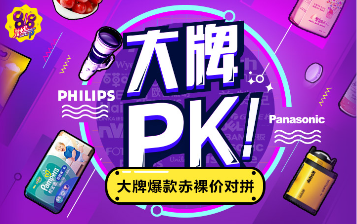
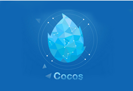

2022-09-18
我是美女
我是帅哥
我是变态
我是少年
我是第一个元素
我是第二个元素
点击事件
点击获取时间
11111
我是帅哥
我也是帅哥
我是帅哥
我也是帅哥
刘德华
张曼玉

亲，上午好
X
搜索
请输入数字
关闭
微博↓
私信
评论
@我
开关灯
按钮1
按钮2
按钮3
按钮4

序号
姓名
年龄
1
刘德华
男
2
蔡徐坤
男
序号
姓名
年龄
1
刘德华
男
2
蔡徐坤
男
我的autobot
团队autobot
草稿箱
我的autobo列表
团队autobot列表
草稿箱列表
第一个li
最后一个li
第一个li
最后一个li
微博↓
私信
评论
@我
微信↓
私信
评论
@我
QQ↓
私信
评论
@我
123
回复
删除
熊大
熊二
熊三
回复
熊大
熊二
熊三
姓名
年龄
性别
操作
我是传统注册事件
我是方法监听注册事件
我是传统注册事件
我是方法监听注册事件
我是来获取事件对象
我是链接点不动，因为阻止了默认行为
111111111111111111111111
222222222222222222222222
333333333333333333333333
444444444444444444444444
555555555555555555555555
我是选不中文字和禁止右键菜单
获取bom里文件的永久存储数据（localstorage）

 X
X
 关闭
关闭